As your projects and experiments increase in complexity or number, the cost of purchasing Arduino boards for each task can easily get out of hand, especially if you like to work on more than one project at a time. At this point, it’s cheaper and easier to integrate the circuitry of an Arduino board into your project by building an Arduino circuit on a solderless breadboard that you can then expand for your specific project. It should cost less than $10 in parts to reproduce the basic Arduino circuitry on a breadboard (which itself is usually reusable if you’re not too hard on it). It’s easier to make your own if your project has a lot of external circuitry, because it saves you running lots of wires from an Arduino back to the breadboard.
The Hardware
To build a minimalist Arduino, you’ll need the following hardware:
- One breadboard
- Various connecting wires
- One 7805 linear voltage regulator
- One 16 MHz crystal oscillator (such as Newark part number 16C8140)
- One ATmega328P-PU microcontroller with Arduino bootloader
- One 1 µF, 25 V electrolytic capacitor (C1)
- One 100 µF, 25 V electrolytic capacitor (C2)
- Two 22 pF, 50 V ceramic capacitors (C3 and C4)
- Two 100 nF, 50 V ceramic capacitors (C5)
- Two 560 Ω resistors (R1 and R2)
- One 10 kΩ resistor (R3)
- Two LEDs of your choice (LED1 and LED2)
- One push button (S1)
- One six-way header pin
- One PP3-type battery snap
- One 9 V PP3-type battery
Some of these parts might be new to you. In the following sections, we’ll explain each part and show you an example and a schematic of each.
7805 Linear Voltage Regulator
A linear voltage regulator contains a simple circuit that converts one voltage to another. The regulator included in the parts list is the 7805-type, which can convert a voltage between 7 and 30 volts to a fixed 5 volts, with a current up to 1 amp, which is perfect for running our breadboard Arduino. Figure 11-1 shows an example of a 7805 called a TO-220 style, which refers to its physical shape.
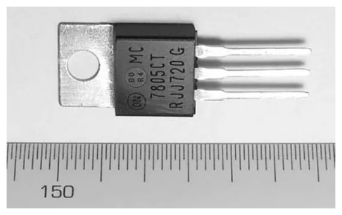
Figure 11-2 shows the schematic symbol for the 7805. When you’re looking at the labeled side of the 7805, the pin on the left is for input voltage, the center pin connects to GND, and the right-hand pin is the 5 V output connection. The metal tab at the top is drilled to allow it to connect to a larger piece of metal known as a heat sink. We use a heat sink when the circuit draws up to the maximum of 1 amp of current, because the 7805 will become quite warm at that level of use. The metal tab is also connected to GND. We will need one 7805 regulator for our example.
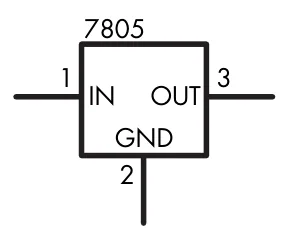
16 MHz Crystal Oscillator
More commonly known as simply a crystal, the crystal oscillator creates an electrical signal with a very accurate frequency. In this case, the frequency is 16 MHz. The crystal we’ll use is shown in Figure 11-3.
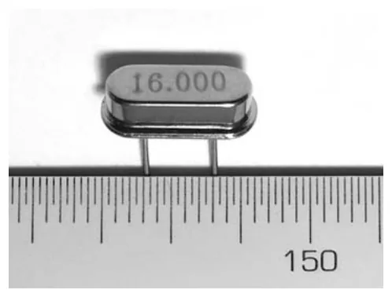
Compare this image to the crystal on your Arduino board. They should be identical in shape and size.
Crystals are not polarized. The schematic symbol is shown in Figure 11-4.
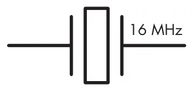
The crystal determines the microcontroller’s speed of operation. For example, the microcontroller circuit we’ll be assembling runs at 16 MHz, which means it can execute 16 million processor instructions per second. That doesn’t mean it can execute a line of a sketch or a function that rapidly, however, since it takes many processor instructions to interpret a single line of code.
Atmel ATmega328-PU Microcontroller IC
A microcontroller is a tiny computer that contains a processor that executes instructions, various types of memory to hold data and instructions from our sketch, and various ways to send and receive data. As explained in Chapter 2, the microcontroller is the brains of our breadboard Arduino. An example of the ATmega328P is shown in Figure 11-5. When looking at the IC in the photo, notice that pin number 1 is at the bottom-left of the IC and is marked by a small dot.
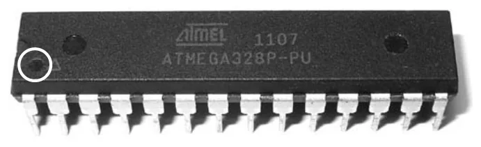
The schematic symbol for the microcontroller is shown in Figure 11-6.
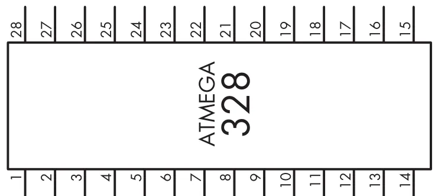
Microcontrollers don’t all contain the Arduino bootloader, the software that allows it to interpret sketches written for an Arduino. When choosing a microcontroller to include in a homemade Arduino, be sure to select one that already includes the bootloader. These are generally available from the same retailers that sell Arduino boards, such as adafruit, Freetronics, and SparkFun.
The Schematic
Figure 11-7 shows the circuit schematic.
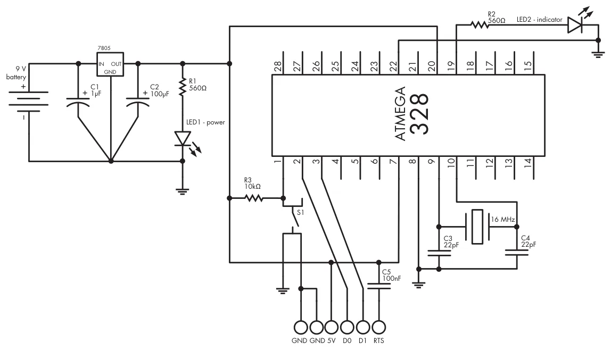
The schematic contains two sections. The first, on the left, is the power supply, which reduces the voltage to a smooth 5 V. You’ll see an LED that is lit when the power is on. The second section, on the right, consists of the microcontroller, the reset button, the programming pins, and another LED. This LED is wired to the ATmega328 pin that is used as Arduino pin 13. Use the schematic to wire up your Arduino. Don’t forget to run the wires to the six-way header pin (shown in Figure 11-8), represented by the six circles at the bottom of the schematic. We’ll use this connection later in the chapter to upload a sketch to our homemade Arduino.
The circuit will be powered using a simple 9 V battery and matching snap connector, as shown in Figure 11-9. Connect the red lead of the battery snap connector to the positive (+) point and the black lead to the negative (–) point on the left side of the circuit.
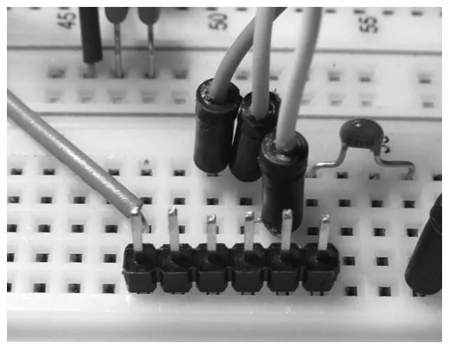
Identifying the Arduino Pins
Where are all the Arduino pins on our homemade Arduino? All the ana-log, digital, and other pins available on the normal Arduino board are also available in our breadboard version; you simply need to connect directly to the microcontroller.
In our breadboard Arduino, the R2 and LED2 are on digital pin 13. Table 11-1 lists the Arduino pins on the left and the matching ATmega328 pins on the right.
| Arduino Pin Name | ATmega328 Pin |
|---|---|
| RST | 1 |
| RX/D0 | 2 |
| TX/D1 | 3 |
| D2 | 4 |
| D3 | 5 |
| D4 | 6 |
| (5 V only) | 7 |
| GND | 8 |
| D5 | 11 |
| D6 | 12 |
| D7 | 13 |
| D8 | 14 |
| D9 | 15 |
| D10 | 16 |
| D11 | 17 |
| D12 | 18 |
| D13 | 19 |
| (5 V only) | 20 |
| AREF | 21 |
| GND | 22 |
| A0 | 23 |
| A1 | 24 |
| A2 | 25 |
| A3 | 26 |
| A4 | 27 |
| A5 | 28 |
To avoid confusion, retailers such as adafruit and Freetronics sell adhesive labels to place over the microcontroller, like the one shown on the microcontroller in Figure 11-10 (order at http://www.freetronics.com/ mculabel/).
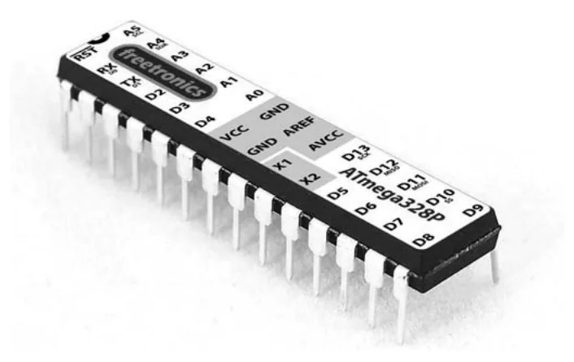
Running a Test Sketch
Now it’s time to upload a sketch. We’ll start by uploading a simple sketch to blink the LED:
// Project 37 - Creating Your Own Breadboard Arduino
void setup()
{
pinMode(13, OUTPUT);
}
void loop()
{
digitalWrite(13, HIGH);
delay(1000);
digitalWrite(13, LOW);
delay(1000);
}You can upload the sketch in one of three ways.
Use the Microcontroller Swap Method
The most inexpensive way to upload a sketch is to remove the microcontroller from an existing Arduino, insert the microcontroller from your homemade Arduino, upload the sketch, and then swap the microcontrollers again.
To remove a microcontroller from the Arduino safely, use an IC extractor, as shown in Figure 11-11.
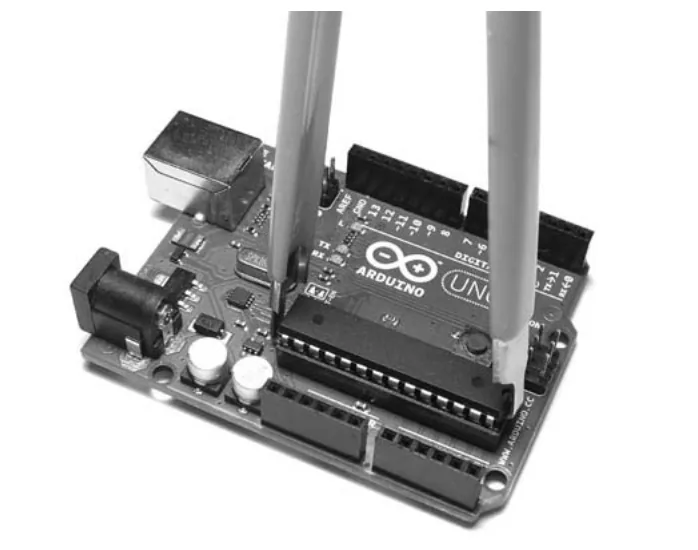
When removing the microcontroller, be sure to pull both ends out evenly and slowly at the same time, and take your time! Removing the component might be difficult, but eventually the microcontroller will come out.
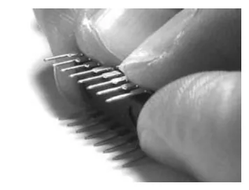
When inserting a microcontroller into the breadboard or your Arduino, you may have to bend the pins a little to make them perpendicular with the body of the microcontroller so that they can slide in easily. To do this, place one side of the component against a flat surface and gently push down; then repeat on the other side, as shown in Figure 11-12.
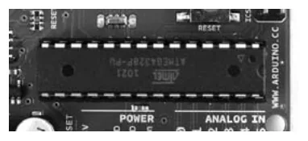
Finally, when you return the original microcontroller to your Arduino board, remember that the end with the notch should be on the right side, as shown in Figure 11-13.
Connect to an Existing Arduino Board
We can use the USB interface of an Arduino Uno to upload sketches to the microcontroller in our breadboard Arduino. Using this method reduces wear on the Arduino board’s socket and saves you money, because you won’t need to buy a separate USB programming cable.
Here’s how to upload a sketch to the microcontroller using the USB interface:
- Remove the microcontroller from your Arduino Uno, and unplug the USB cable.
- Remove the power (if connected) from the breadboard Arduino circuit.
- Connect a wire from Arduino digital pin 0 to pin 2 of the breadboard’s ATmega328P, and connect another from Arduino digital pin 1 to pin 3 of the ATmega328P.
- Connect the 5 V and GND from the Uno to the matching areas on the breadboard.
- Connect a wire from Arduino RST to pin 1 of the ATmega328P.
- Plug the USB cable into the Arduino Uno board.
At this point, the system should behave as if it were an ordinary Arduino Uno, so you should be able to upload sketches into the breadboard circuit’s microcontroller normally and use the serial monitor if necessary.
Use an FTDI Programming Cable
The final method is the easiest, but it requires the purchase of a USB programming cable, known as an FTDI cable (simply because the USB interface circuitry inside is made by a company called FTDI). When purchasing an FTDI cable, make sure it’s the 5 V model, because the 3.3 V model will not work properly. This cable (shown in Figure 11-14) has a USB plug on one end and a socket with six wires on the other. The USB end of this cable contains circuitry equivalent to the USB interface on an Arduino Uno board. The six-wire socket connects to the header pins shown in Figures 11-7 and 11-8.
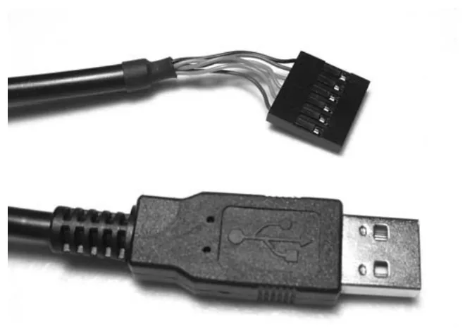
When you’re connecting the cable, be sure that the side of the socket with the black wire connects to the GND pin on the breadboard’s header pins. Once the cable is connected, it also supplies power to the circuit, just like a normal Arduino board would do.
Before uploading your sketch or using the serial monitor, change the board type to Arduino Duemilanove or Nano w/ ATmega328 by choosing Tools4Board and then selecting the correct microcontroller (Figure 11-15).
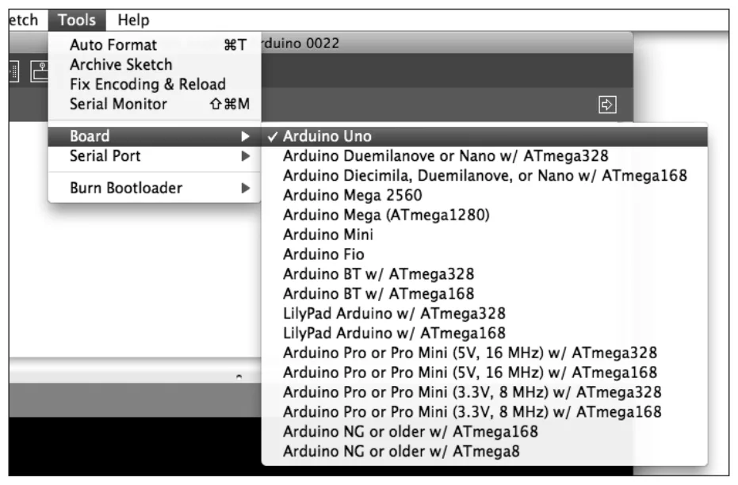
Once you have selected a method of uploading, test it by uploading the Project 37 sketch. Now you should be able to design more complex circuits using only a breadboard, which will let you create more projects for less money. You can even build more permanent projects from scratch if you learn to make your own printed circuit boards.